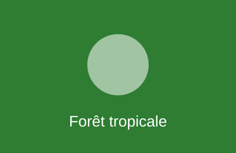
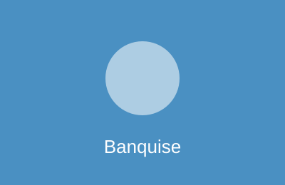
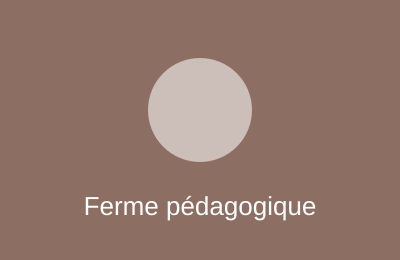
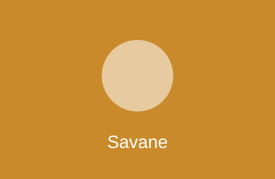
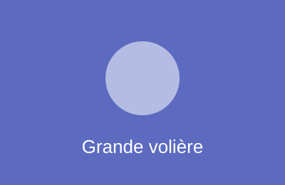
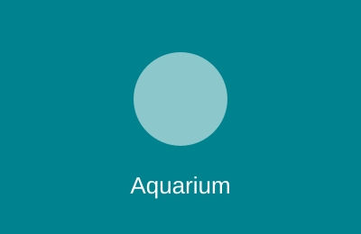

Parc animalier de Val-Sorin
Les trois dernières naissances
-

Lua, capucin
Né(e) le 20/12/2025, forêt tropicale.
-

Flocon, manchot de Humboldt
Né(e) le 18/01/2026, banquise.
-

Caramel, chèvre naine
Né(e) le 02/03/2026, ferme pédagogique.
Les six secteurs
-

Savane
Grande plaine herbeuse de trois hectares, girafes, zèbres et autruches en cohabitation.
Voir la savane -
Forêt tropicale
Serre chaude et humide, canopée artificielle, singes, paresseux et oiseaux colorés.
Voir le secteur -
Banquise
Bassin réfrigéré avec plage de glace, manchots et phoques.
Voir le secteur -
Ferme pédagogique
Enclos ouverts au contact, chèvres, ânes et poules, ateliers pour les scolaires.
Voir le secteur -

Grande volière
Volière de vingt mètres de haut traversée par une passerelle, rapaces et perroquets.
Voir le secteur -

Aquarium
Douze bassins d'eau douce et d'eau de mer, tunnel sous le bassin des raies.
Voir le secteur